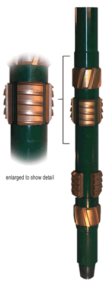

| The
DSC Casing Scraper Tool features the most advanced scraper technology
currently available to the industry. design features ensure removal
of rust, millscale, cement stringers, paraffin and other types of foreign
debris from inside walls of the casing. |
|
 |
 |
- Designed
with 6 scraping blades to ensure 360 degree coverage inside the
casing
- Rotating
stabilizer sleeves are incorporated to reduce torque and insure constant
scraper contact with the inside of casing, tap and bottom at any
angle of the casing bore
- Scraper blades
are machined from solid bar stock, no cast. The angle of the scraping
edges on the blades ensure that no foreign matter is by-passed
- The blades
are spring mounted and held in place by two sub ends. These sub
ends are torqued to the body with rotary shoulder connections
|
|
 |
|
- DSC Casing
Scraper can be rotated
- Can be run
in combination with the DSC "V" Brushing Tool
|
|